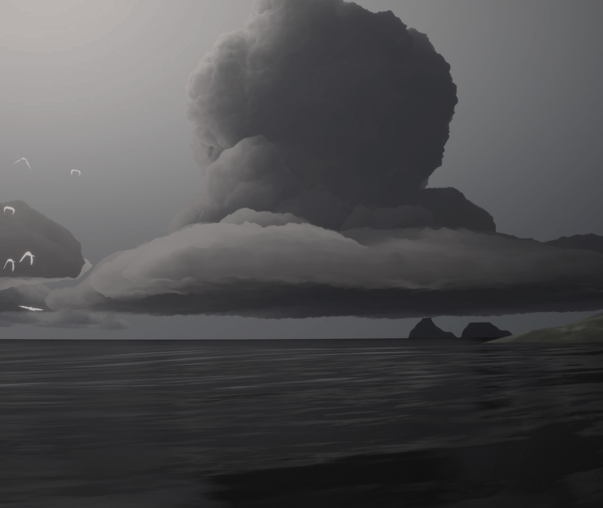
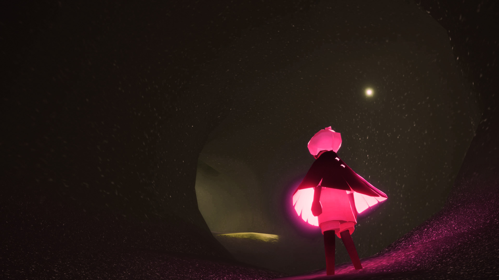
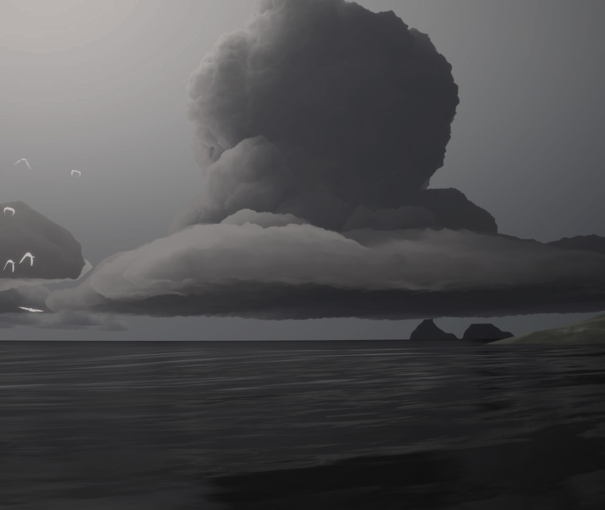
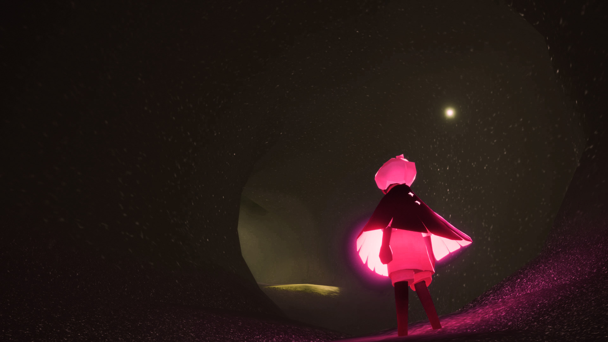

"CONSUMPTION"

"Consumption", 2020, Photoshop and Sublime Text Editor
"Consumption" is a collage glitched in Sublime Text Editor and further refined in Adobe photoshop. This piece was made to represent the digital culture in which we live in today. The consumption of social media in turn cosumes us. With the popularity of different platforms, it affects our society, culture, and the way we view others and life itself. What becomes important is up to the users yet the control has been skewed. We as social media users are now being taken control of. No matter good or bad, social media will have consequences that play out in reality. It will just depend on how you bring it into reality.
VIDEO GAME PHOTOGRAPHY
 



"The middle of everywhere", 2020, photoshop